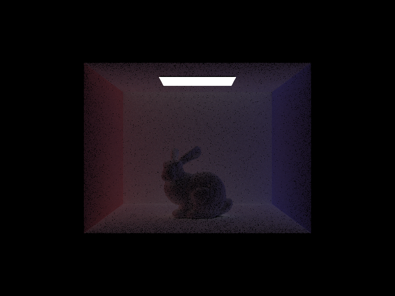

CS184/284A Spring 2025 Homework 3 Write-Up
Name: Cashus Puhvel
Link to webpage: https://cal-cs184-student.github.io/hw-webpages-cashman/hw3/index.html
Link to GitHub repository: https://github.com/cal-cs184-student/sp25-hw3-buhruh
Overview
In this project, I implemented a complete path tracing renderer, which is a program that simulates light behavior to generate accurate looking global illumination. The renderer starts by casting rays from the camera through each pixel, and I implemented functions to compute the intersections of these rays with any primitive. I implemented a BVH that improved performance by organizing scene primitives heirarchichally, and then developed direct and global illumination. For direct illumination, I implemented functions that computed direct lighting at an intersection point. For global illumination, I simulated indirect lighting by recursively tracing rays from surfaces. My last implementation was adaptive sampling to optimize the render times. My renderer monitors the convergence of each pixel as the pixel is being sample, making sure pixels with low variance are sampled less. Overall, I gained a lot of insight into physically based rendering strategies. I also became very aware throughout the project of how subtle choices in my algorithm can greatly affect the outcome when my program is rendering something of significant size.Part 1: Ray Generation and Scene Intersection
For the ray generation process, the pathtracer must first generate rays from the camera for each pixel. My implementation assumes a pinhole camera that looks down the axis in the local camera space on axis Z, from Z to -Z. The camera has horizontal and vertical fields of view, stored inhFov and vFov, which determine how wide and tall the sensor plane is in the camera space.
In
generate_ray, to generate a ray for one pixel, I use the tangent of the radian values of hFov and vFov to figure out the correct lines to construct the camera direction vector camDir with, normalize camDir, multiply it by the rotation matrix c2w (which will rotate it from camera space direction into world space), creating worldDir vector, normalize worldDir, create a ray r with its origin set to the cameras location in the world space and the direction set to worldDir, use nClip and fClip to set ray’s intersection range, and finally, I return the ray r.
My mapping formula makes sure that the normalized pixel coordinates recognize (0, 0) as the bottom left and (1, 1) as the top right of the normalized image space, and that the sensor plane is scaled correctly to the camera's field of view.
To generate subpixel rays for each pixel and to anti-alias, raytrace_pixel is implemented to loop over ns_aa samples for each pixel. The radiance values of the sub-pixels are averaged to obtain the pixel’s new radiance. generate_ray and est_radiance_global_illumination are called to find the ray for each sub-pixel and to estimate the illuminance for each ray. The sample buffer is updated for the corresponding pixel’s radiance as well as the sample count buffer for the number of samples taken.
For triangle intersection in the rendering pipeline, or determining if a ray intersects with a triangle, I use the Möller-Trumbore algorithm, which finds and uses the barycentric coordinates of a triangle instead of finding each plane’s intersection individually. I first define two edges, both sharing one point of the triangle. I then take the cross product of the given ray direction with the second edge, and take the dot of that result with the first edge, and define it as
d1. If d1 is close to zero there is no intersection, so I return false. d2 is defined and set to the inverse of d1. I then compute the vector for vertex p1, find barycentric coordinate using the dot product between both vectors, and return false if there is no intersection inside the triangle. I repeat for the next barycentric coordinate, and check to see if the distance where the intersection occurs is in valid range for the camera, and if it is not I return false. If I have not returned by then, I return true.
The functions has_intersection and intersect are both very similar in implementation, but has_intersection only checks to see if there is an intersection, while intersect actually records the intersection in the pointers in isect.
For ray-sphere intersections, the helper function
test implements the actual logic of the sphere intersection, and the functions has_intersection and intersect both use test. To see if a ray has any intersections with a sphere, test computes the vectors and coefficients necessary for a sphere’s quadratic equation. The discriminant is then calculated, and if it is less than 0, then there are no real solutions to the equation, and the ray does not intersect with the sphere. The two floats input into the helper function, t1 and t2, are changed to the two solutions to the quadratic equation and sorted so t1 is less than or equal to t2. Just like for triangles, has_intersection and intersect, for the Sphere object, use test to get the intersection values if there are intersections, and intersect also logs the intersections in the Intersection labeled i.
Small .dae files with normal shading:
|
|

|

|
Part 2: Bounding Volume Hierarchy
For our BVH construction algorithm used to accelerate our ray tracing inconstruct_bvh, I first loop over every primitive and expand an empty bounding box bbox for each of their bounding boxes. I then initialize a new BVHNode node for the bounding box bbox, and if the amount of primitives is less than the max_leaf_size for the node, node->start is set to start, node->end is set to end, and node is returned. The node is a leaf, and no more splitting is done. If the node is not a leaf, then a vector representing each of the dimensions of bbox is created, and the variable axis is set to 0, 1, or 2 depending on which bbox axis is longest.
I then decided to split using a mean-centroid heuristic, splitting on the average value of all of the centroids from the primitives in the bounding box. Primitives with a centroid less than or equal to the average on the chosen axis will go left, and those greater will go right. If either of the counts in the partition have 0 primitives, the partition fails, and the node is marked as a leaf and returned. After splitting and checking for a valid split, our split is stored in the iterator
pivot. The node’s left and right child nodes are then recursively constructed with construct_bvh, and node is returned either with its children set or marked as a leaf.
Now the program can render much larger .dae files extremely fast:
|
|
|
| File | # of Primitives | Render time without and with BVH Acceleration |
|---|---|---|
| cow.dae | 5856 | 8.55s / 0.0541 |
| CBlucy.dae | 133796 | 167.5s / 0.0497s |
| wall-e.dae | 240326 | 273.12s / 0.0605s |
While using normal shading on larger .dae files, the implemented BVH acceleration rendered files in less than seconds that would otherwise take minutes with a brute force approach. cow.dae has 5856 primitives, and took 8.55 seconds without BVH acceleration and 0.0541 seconds with the acceleration.
CBlucy.dae has 133796 primitives and took 167.5 seconds without the acceleration and 0.0497 seconds with the acceleration. The wall-e.dae file, even though it is the largest file tested with 240326 primitives, was rendered in 0.0605 seconds instead of 273.12 seconds. The BVH acceleration simplifies the complexity of the calculations of the ray intersections with the primitives from linear to log. BVH acceleration greatly reduces render times for extremely complex files without losing image quality.
Part 3: Direct Illumination
For my implementation of direct lighting,estimate_direct_lighting_hemisphere and estimate_direct_lighting_importance are implemented for uniform hemisphere sampling and light importance sampling, respectively.
estimate_direct_lighting_hemisphere is called by one_bounce_radiance to return an estimate of the direct lighting of a point that a ray hits. After the coordinate system, hit point, and outgoing direction are initialized, the total number of samples to take is assigned to num_samples, and a 3d vector L_out is initialized to accumulate the radiance to be returned. estimate_direct_lighting_hemisphere then loops over each sample. Another vector is assigned to a sample of a random direction in the uniform hemisphere, the pdf is set to the correct value for uniform hemisphere sampling (1.0 / (2.0 * M_PI)), the sampled local direction is conderted into world space and assigned to 3d vector wi, a shadow ray is constructed from the hit point (offset correctly and with world space direction wi), another vector and intersection are created to store the shadow rays intersection, the shadow ray is checked for an intersection, the cosine term is computed (always non-negative), the bsdf is evaluated from the incoming direction to the outgoing direction, L_out is increased by the retrieved value from the bsdf multiplied by the shadow ray's intersection emission multiplied by the cosine term divided by the pdf, and finally, L_out is returned after being divided by the number of samples. This correctly returns the average radiance from the accumulated samples.
estimate_direct_lighting_importance is also called by one_bounce_radiance, and is implemented in a similar fashion for the beginning. After the coordinate system, hit point, and outgoing direction are initialized, a new 3d vector L_out is created for the total radiance, and the function loops over each light in the scene. 1 sample is used if the light is a delta light, and ns_area_light samples are used otherwise. Another vector sum is used to keep a sum for the current light. The other necessary variables are declared, and the light is sampled at the hit point, getting its radiance, direction, distance to light, and the pdf. Another shadow ray is created with its interval set as well as another intersection to check the shadow ray. If the shadow ray does not hit any geometry, which means light is visible, then the sampled direction is converted to local space, the bsdf and cosine factor are evaluated, and the samples light contribution is added to sum. sum is then averaged for all of the samples, and then sum is added to L_out. L_out is returned, now having the total direct radiance from all of the lights.
CBbunny.dae with uniform hemisphere sampling and light importance sampling (64 samples per pixel and 32 light rays):
|
|
|
It can be seen above that importance sampling converges much faster than uniform sampling for the same parameters. The noise in uniform hemisphere sampling is caused because of a small portion of rays that are cast from the hit point intersect a light source, causing dark patches. Importance sampling only considers the rays that contribute to the illumination, which leads to a much smoother render and a lot less noise in the image.
CBbunny.dae with different levels of light rays (light importance sampling and 1 sample per pixel):
|
|
|
|
|
|
Part 4: Global Illumination
To simulate full global illumination,est_radiance_global_illumination first creates a vector and assigns it to the return value of zero_bounce_radiance, which gets the light from light sources that intersects the camera directly. Another vector is created and assigned to the return value of at_least_one_bounce_radiance, and the both vectors are added together and returned.
at_least_one_bounce_radiance first initializes the coordinate system, calculates the hit point, and calculates the outgoing direction in local space. one_bounce_radiance is then called to compute the direct illumination at the intersection, and it is stored in L_direct. The bsdf is sampled and stored in bsdf_val. The cosine factor is calculated, the russian roullette probability for ray termination is set to 0.7, meaning that we continue recursion only 70% of the time. If the ray depth is less than 1, a vector of value (0, 0, 0) is returned, and if the ray depth is 1, there is only one bounce, so L_direct is returned. Otherwise, if the ray depth is the max ray depth, so its the first bounce, or the coin flip is true, then we step into the recursive part of the function. The incoming sample direction is transformed into world space, and a new ray and intersection for tbe bounce is constructed. If there is an intersection for the bounce ray, at_least_one_bounce_radiance is recursively called and assigned to a new vector. wsample is the calculation of the weight from this bounce, and L_direct is increased by wsample each time in the loop, and after the loop is finished, L_direct is returned.
CBspheres_lambertian.dae with only direct lighting and only indirect lighting:
|
|

|
As is visible above, the indirect lighting lights up the rest of the scene, not just what the direct lighting reaches.
CBbunny.dae at different levels of max_ray_depth (1024 samples per pixel):
max_ray_depth: 0 |
max_ray_depth: 1 |
max_ray_depth: 2 |
max_ray_depth: 3 |
max_ray_depth: 4 |
max_ray_depth: 5 |
When the light makes its second and third bounces off of the surface, as can be seen with
max_ray_depth of 2 and 3 above, the quality of the rendered image greatly increases. The image becomes much more realistic and natural looking simply because of one light bounce occuring. The most visible changes are with the second and third bounces, but the room becomes even more realistically lit, though more slightly, with every bounce.

max_ray_depth of 100CBspheres_lambertian with different pixel rates with global illumination:
|
|
|
|
|
|
|
|

|
Part 5: Adaptive Sampling
To reduce the noise created by Monte Carlo sampling, we increase the number of samples. Increasing the number of samples for each pixel is exponentially increasingly computationally expensive, so I implemented adaptive sampling. Adaptive sampling is a technique for optimizing our sampling process that avoids using a fixed, high number of samples, and instead dynamically allocates more samples to pixels that have not yet converged while also stopping sampling pixels that are already stable.In
raytracepixel, I first start by creating a new vector for the total radiance of the pixel, and then two double variables to keep track of the illuminance and the square of the illuminance of each sample. An integer is initialized for the loop and the sample rate image. The function loops over every sample for each pixel, and stops either when the maximum samples are reached or convergence is met. In the loop, I create a new vector for a random sample value of the grid. I then initialize two doubles to be the normalized coordinates for the sample within the entire image. I then initialize a new ray with these coordinates, and the depth of the ray is set. I then evaluate the radiance using est_radiance_global_illumination and store the value it returns in a vector L. I then add L to the total radiance, add the illuminance of L to my illuminance variable and add the square to my square of illuminance variable, and use these values to compute the mean, variance, and the standard deviation. I then compute the 95% confidence interval, and if the confidence interval is below the maxTolerance, I break and the loop exits early. I add the final average radiance to the sampleBuffer, and finally, I add the final sample count to the sampleCountBuffer.
CBspheres_lambertian.dae with 2048 samples per pixel, 1 sample per area light, a max ray depth of 5, and adaptive sampling:
CBbunny.dae with the same parameters and adaptive sampling: